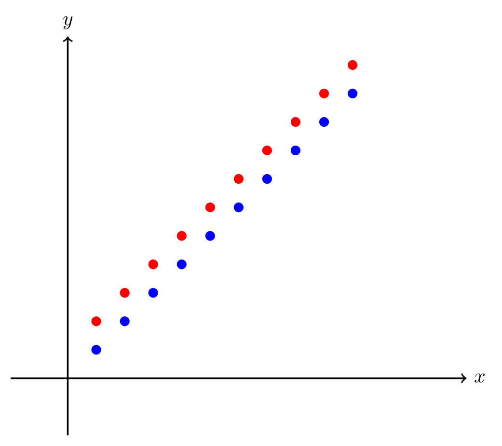
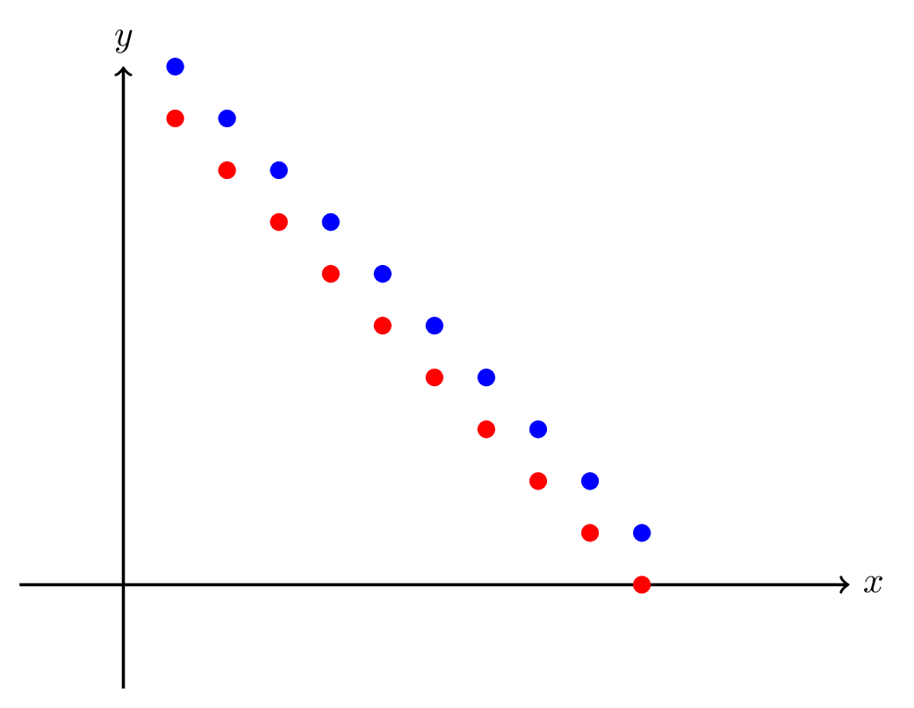
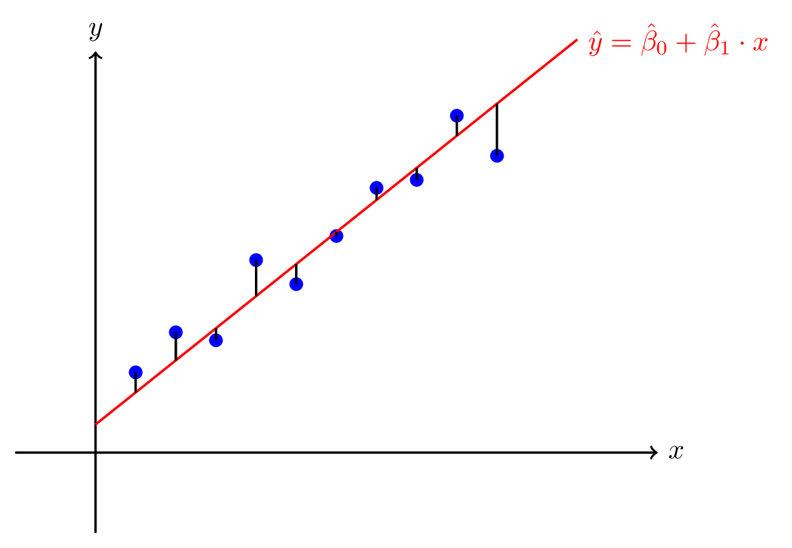
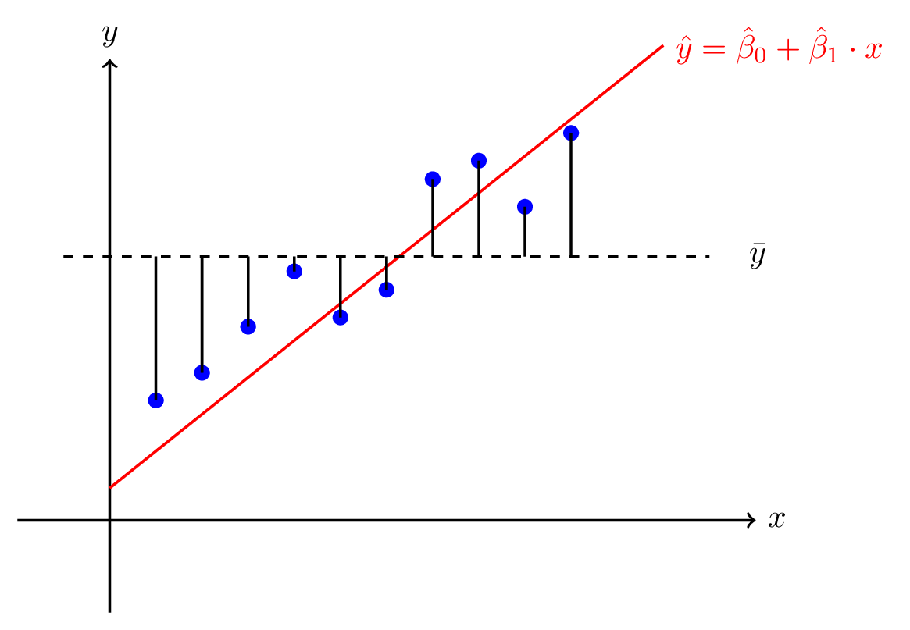
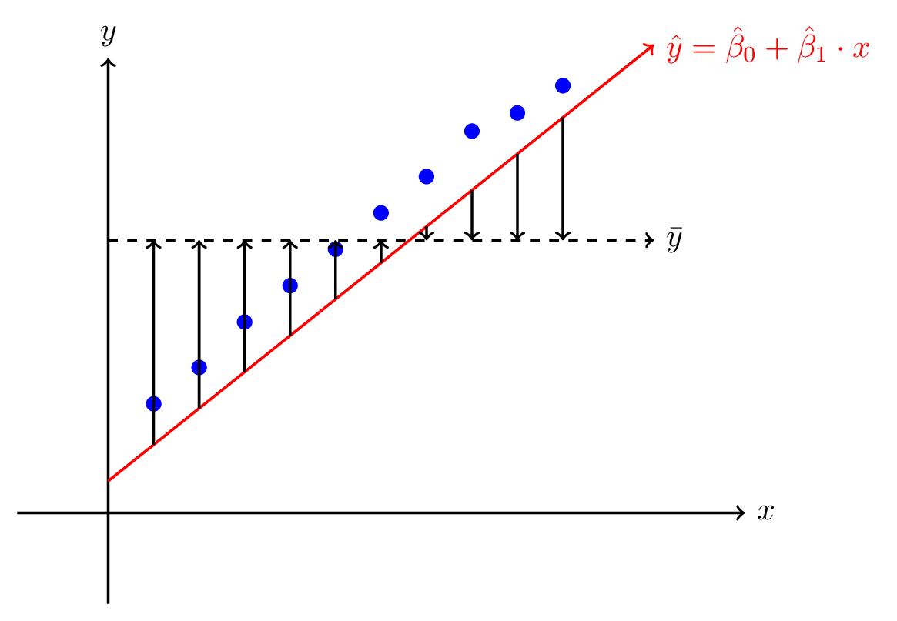
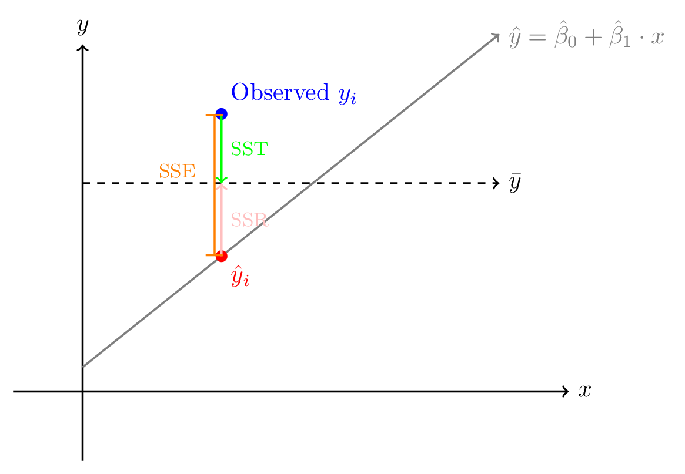

Introduction to Simple Linear Regression
In statistics, simple linear regression (SLR) is a linear regression model with a single explanatory variable. In other words, we use linear functions to illustrate the relationship of variables (ie. time and one’s height). The goal of simple linear regression is to find the best-fitting straight line, known as the regression line, that predicts the dependent variable based on the independent variable. For example we are interested a people’s height within 10 months. Then, we use coordinate system to draw each data point and use simple linear regression to find a function which perfectly describes the relationship between height and time.
An illustration of simple linear regression. The blue points are measures of height monthly, and the red line is our SLR model. In this case \(m\) is the slope which tells you the rate of change, \(b\) is the intercept which may have a special meaning depending on the case.
Now, you may wonder the accuracy of this model. In statistics, we do have parameters that approximate the slope and intercept of the function \(y = mx + b\). The model we are going to use is: \(\hat{y} = \hat{\beta_1}x + \hat{\beta_0} + \epsilon\). From this model, the slope and the intercept are \(\hat{\beta_1}\), \(\hat{\beta_{0}}\) respectively (\(\hat{\beta_1}\) and \(\hat{\beta_{0}}\) are unbiased estimators). Moreover, the \(\epsilon\)-term is called error term, which we will discuss it later.
Measures of Linear Relationship
Before we formally introduce simple linear regression, there are some
measures of SLR that should be discussed.
Covariance (Sample Covariance)
In probability theory and statistics, covariance is a measure of the joint variability of two random variables. The covariance sign shows the direction of the linear relationship between two variables. If higher values of one variable tend to occur with higher values of the other (and lower with lower), the covariance is positive, meaning the variables move in the same direction. If higher values of one variable tend to occur with lower values of the other, the covariance is negative, meaning they move in opposite directions. The size (magnitude) of the covariance reflects how much the two variables vary together, based on the variances they share.
The formula of sample covariance is given by: \[S_{xy} = \frac{1}{n-1} \cdot \sum_{i=1}^{n} (x_i - \bar{x})(y_i - \bar{y}) = \frac{\sum_{i = 1}^{n}x_i \cdot y_i}{n -1} - \frac{n\bar{x}\bar{y}}{n-1}.\] These are the two ways to compute covariance. Both will give you the same answer.
Basically, covariance indicates that how two variables move together.
If covariance of two random variables is greater than \(0\) (\(cov(x,y) > 0\)), then the two random variables show the same trend. That is: if one random variable is increasing, then the other one is also increasing; while if one random variable is decreasing, then the other one is also decreasing.
If covariance of two random variables is less than \(0\) (\(cov(x,y) < 0\)), then the two random variables show the opposite trend. That is: if one random variable is increasing, then the other one is decreasing; while if one random variable is decreasing, then the other one is increasing.
If covariance of two random variables is equal to \(0\) (\(cov(x,y) = 0\)), then we say that there is no relationship (systematically linear) between the two random variables.
Note that covariance is not standardized, so it can be difficult to
interpret directly.
Coefficient of Correlation
In statistics, correlation or dependence is any statistical relationship, whether causal or not, between two random variables or bivariate data. It helps us understand whether and how changes in one variable are associated with changes in another. A positive correlation means that as one variable increases, the other tends to increase as well, while a negative correlation means that one variable tends to decrease as the other increases. The degree of correlation is usually expressed with a correlation coefficient, which ranges from \(-1\) to \(+1\).
The coefficient of correlation is given by: \[r_{xy} = \frac{S_{xy}}{S_x \cdot S_y}.\] Now, \(r_{xy} =\) sample correlation coefficient, \(S_{xy} =\) sample covariance, \(S_{x} =\) sample standard deviation of \(x\), \(S_{y} =\) sample standard deviation of \(y\). Also, remember that the range of coefficient of correlation is between \(-1\) and \(+1\): \(r_{xy} \in [-1, +1]\).
The correlation r measures the strength and direction of the linear association between two quantitative variables \(x\) and \(y\). Although you calculate a correlation for any scatter plot, \(r\) measures only straight-line relationships. In short, coefficient of correlation is a measure of the strength of the linear relationship between two random variables.
If \(r_{xy} \approx +1\), then we say that the two random variables have a strong positive correlation. (See figure 15.2)

An illustration of strong positive correlation (rxy ≈ +1).
If \(r_{xy} \approx -1\), then we say that the two random variables have a strong negative correlation. (See figure 15.3)

An illustration of strong negative correlation (rxy ≈ −1).
If \(r_{xy} \approx 0\), then we say that there is essentially no correlation between the two random variables. Note that if \(r \approx 0\), then it suggests a linear relationship doesn’t exist but other relationship may exist. (See figure 15.4)

An illustration of no correlation (rxy ≈ 0).
Note that correlation doesn’t imply causation:
\(cor(x,y) \approx +1\) doesn’t necessarily imply on increase in \(x\) causes increase in \(y\).
\(cor(x,y) \approx -1\) doesn’t necessarily imply on increase in \(x\) causes decrease in \(y\).
Properties of Covariance and Correlation
These two values are symmetric:
\(cov(x,y) = cov(y,x)\);
\(cor(x,y) = cor(y,x)\).
Five observations taken for two variables follow.
| xi | yi | |
| 4 | 50 | |
| 6 | 50 | |
| 11 | 40 | |
| 3 | 60 | |
| 16 | 30 |
\(a\) Compute the sample covariance.
\(b\) Compute and interpret the sample correlation coefficient.
Solution:
Step 1: Compute \(\bar{x}\) and \(\bar{y}\); \(\bar{x} = 8\) and \(\bar{y} = 46\) (check this by yourself).
Step 2: Find \(s_x\) and \(s_y\).
\[s_x^2 = \frac{1}{5-1} \cdot \sum_{i = 1}^{5}(x_i - \bar{x})^2 = 29.5 \text{ and } s_y^2 = \frac{1}{5-1} \cdot \sum_{i=1}^{5}(y_i - \bar{y})^2 = 130\] Then: \(s_x = 5.4313\) and \(s_y = 11.4017\).
Step 3: Find \(s_{xy}\) and \(r\).
\[\sum_{i=1}^{5}x_i \cdot y_i = 1600, \text{ then } s_{xy} = \frac{1600}{5-1} - \frac{5\cdot8\cdot46}{5-1} = -60 \text{ and } r_{xy} = \frac{s_{xy}}{s_x \cdot s_y} = 0.9688.\]
R code
Step 1: Entering data;
X=c(4,6,11,3,16);
Y=c(50,50,40,60,30);Step 2: Finding means;
mean(X);
mean(Y);Step 3: Finding variances;
var(X);
var(Y);Step 4: Finding standard deviations;
sd(X);
sd(Y):Step 5: Finding covariance and correlation;
cov(X,Y);
cor(X,Y);Least Squares Method
The method of least squares is a mathematical optimization technique
used to find the best-fitting function by minimizing the sum of the
squared differences between the observed data points and the values
predicted by the model. It interested in a linear model of the form:
\(y = \beta_0 + \beta_1 \cdot x_1 + \cdots +
\beta_p \cdot x_p + \epsilon\), where \(\epsilon \sim N(0, \sigma^2)\), \(x_i\)’s (\(i =
1,..., p\)) are independent predictors, \(\beta_j\)’s (\(j
= 0,..., p\)) are coefficients, \(y\) is dependent variable.
Using sample data, we get estimates of this model of the form: \(\hat{y} = \hat{\beta_0} + \hat{\beta_1} \cdot x_1
+ \cdots + \hat{\beta_p} \cdot x_p\). Now, \(\hat{y}\) is predicated \(y\), \(x_i\)’s (\(i =
1,...,p\)) are independent predicators, \(\hat{\beta_j}\)’s (\(j = 0,...,p\)) are estimated coefficients.
Moreover, \(\hat{\beta_0}\) is
intercept; \(\hat{\beta_1},...,\hat{\beta_p}\) are
quantifiers how much \(y\) changes with
a unit increase in \(x_i\)’s.
In this course, we focus on the following model a bit more: \(\hat{y} = b_0 + b_1\cdot x\), where \(b_0\) is the y-intercept, and \(b_1\) is the slope, and \(\hat{y}\) is the value of \(y\) determined by the line. The
coefficients \(b_0\) and \(b_1\) are derived using Calculus so that we
minimize the sum of squared deviations: \(\sum_{i=1}^{n}(y_i - \hat{y_i})^2\). Then
the least squares line coefficients are \(b_1
= r \cdot \frac{s_y}{s_x}\) and \(b_0 =
\bar{y} - b_1\cdot \bar{x}\).
Facts about Least Squares Method
The distinction between explanatory and response variables is essential in Least Squares Method.
The least-squares line (trendline) always passes through the point (\(\bar{x}\), \(\bar{y}\)) on the graph of \(y\) against \(x\).
The square of the correlation, \(r^2\), is the fraction of the variation in the values of \(y\) that is explained by the variation in \(x\).
A tool die maker operates out of a small shop making specialized tools. He is considering increasing the size of his business and needs to know more about his costs. One such cost is electricity, which he needs to operate his machines and lights. He keeps track of his daily electricity costs and the number of tools that he made that day. These data are listed next. Determine the fixed and variable electricity costs using the Least Squares Method.
| Day | Number of tools (X) | Electricity costs (Y) |
| 1 | 7 | 23.80 |
| 2 | 3 | 11.89 |
| 3 | 2 | 15.89 |
| 4 | 5 | 26.11 |
| 5 | 8 | 31.79 |
| 6 | 11 | 39.93 |
| 7 | 5 | 12.27 |
| 8 | 15 | 40.06 |
| 9 | 3 | 21.38 |
| 10 | 6 | 18.65 |
Solution:
Step 1: Entering Data;
tools=c(7,3,2,5,8,11,5,15,3,6);
cost=c(23.80,11.89,15.98,26.11,31.79, 39.93,12.27,40.06,21.38,18.65);Step 2: Finding Slope;
Sx=sd(tools);
Sy=sd(cost);
r=cor(tools,cost);
b1=r*(Sy/Sx);
b1;
## [1] 2.245882Step 3: Finding \(y\)-intercept;
x.bar=mean(tools);
y.bar=mean(cost);
b0=y.bar - b1*x.bar;
b0;
## [1] 9.587765We can also use R-code to draw a graph:
plot(tools,cost,pch=19);
abline(least.squares$coeff,col="red");
# pch=19 tells R to draw solid circles;
# abline tells R to add trendline;Interpretation:
The slope measures the marginal rate of change in the dependent variable. In this example, the slope is \(2.25\), which means that in this sample, for each one-unit increase in the number of tools, the marginal increase in the electricity cost is \(\$ 2.25\) per tool.
The \(y\)-intercept is \(9.57\); that is, the line strikes the \(y\)-axis at \(9.57\). However, when \(x = 0\), we are producing no tools and hence the estimated fixed cost of electricity is \(\$9.57\) per day .
Simple Linear Regression
Estimating Regression Model Parameters
The regression line which we are going to use is: \(E(Y) = \beta_0 + \beta_1 \cdot x\). This is
fitted to the data points \((x_1, y_1), (x_2,
y_2), \ldots, (x_n, y_n)\) by finding the line that is closest to
the data in some sense. There are many ways in which closeness can be
defined, but the method most generally used is to consider the vertical
deviations between the line and the data points: \(y_i - (\beta_0 + \beta_1 \cdot x_i), 1 \leq i \leq
n\).
The fitted line is chosen to be the line that minimizes the sum of the
squares of these vertical deviations \[Q =
\sum_{i=1}^{n} [y_i - (\beta_0 + \beta_1 \cdot x_i)]^2\] and this
is referred to as the least squares fit. (The quantity \(Q\) is also called the sum of
squares for error, SSE.)
The parameter estimates \(\hat{\beta_0}\) and \(\hat{\beta_1}\) are therefore the values
that minimize the quantity \(Q\). They
are found taking partial derivatives of \(Q\) with respect to \(\hat{\beta_0}\) and \(\hat{\beta_1}\) and setting the resulting
expressions equal to \(0\).
Now, you know the method to get the regression model \(E(Y) = \beta_0 + \beta_1 \cdot x\), the
following lines are the derivation:

The following proof is the derive of \(\hat{\beta_0}\) and \(\hat{\beta_1}\) for simple linear regression model: \(\hat{y} = \hat{\beta_0} + \hat{\beta_1} \cdot x + \epsilon\).
\[\begin{aligned} \text{Firstly, we examine sum of residual squared:}\\ \sum_{i=1}^{n}e_i^2 &= \sum_{i=1}^{n}(y_i - \hat{y_i})^2 = 0\\ &= \sum_{i=1}^{n}[y_i - (\hat{\beta_0} + \hat{\beta_1} \cdot x_i)]^2 = 0\\ &= \sum_{i=1}^{n}(y_i - \hat{\beta_0} - \hat{\beta_1} \cdot x_i)^2 = 0\\ \end{aligned}\] To find \(\hat{\beta_0}\) and \(\hat{\beta_1}\) which minimizes \(\sum_{i=1}^{n}e_i^2\), we need partial derivative with respect to \(\hat{\beta_0}\) and \(\hat{\beta_1}\): \[\begin{aligned} \frac{\partial}{\partial \hat{\beta_0}}\sum_{i=1}^{n}e_i^2 &= \frac{\partial}{\partial \hat{\beta_0}}\sum_{i=1}^{n}(y_i - \hat{\beta_0} - \hat{\beta_1} \cdot x_i)^2 = 0\\ &= \sum_{i=1}^{n}2(\hat{\beta_0} + \hat{\beta_1}x_i - y_i) = 0\\ &= \sum_{i=1}^{n}\hat{\beta_0} + \hat{\beta_1}\sum_{i=1}^{n}x_i - \sum_{i=1}^{n}y_i = 0 \text{; } (\text{consider:} \sum_{i=1}^{n}x_i = n\bar{x})\\ &= n\cdot\hat{\beta_0} + \hat{\beta_1}\cdot n \bar{x} - n\bar{y} = 0\\ \text{Hence: } \hat{\beta_0} &= \bar{y} - \hat{\beta_1}\cdot \bar{x}. \text{ (Equ 1)}\\ \frac{\partial}{\partial \hat{\beta_1}}\sum_{i=1}^{n}e_i^2 &= \frac{\partial}{\partial \hat{\beta_1}}\sum_{i=1}^{n}(y_i - \hat{\beta_0} - \hat{\beta_1} \cdot x_i)^2 = 0\\ &= \sum_{i=1}^{n}2(y_i - \hat{\beta_0} - \hat{\beta_1}x_i)(-x_i)=0\\ &= \sum_{i=1}^{n}2(\hat{\beta_0}x_i + \hat{\beta_1}x_i^2 - y_ix_i)=0\\ &= \hat{\beta_0}\sum_{i=1}^{n}x_i + \hat{\beta_1}\sum_{i=1}^{n}x_i^2 - \sum_{i=1}^{n}x_iy_i = 0\\ &= \hat{\beta_1}\sum_{i=1}^{n}x_i^2 + \sum_{i=1}^{n}(\bar{y} - \hat{\beta_1}\bar{x})x_i - \sum_{i=1}^{n}x_iy_i = 0 \text{; } (\text{sub Equ 1 into this line})\\ &= \hat{\beta_1}\sum_{i=1}^{n}x_i^2 + \bar{y}\sum_{i=1}^{n}x_i - \hat{\beta_1}\bar{x}\sum_{i=1}^{n}x_i - \sum_{i=1}^{n}x_iy_i = 0\\ &= \hat{\beta_1}\sum_{i=1}^{n}x_i^2 + n\bar{x}\bar{y} - n\hat{\beta_1}(\bar{x})^2 - \sum_{i=1}^{n}x_iy_i = 0\\ &= \hat{\beta_1}[\sum_{i=1}^{n}x_i^2 - n(\bar{x})^2] + n\bar{x}\bar{y} - \sum_{i=1}^{n}x_iy_i = 0\\ \text{Hence: } \hat{\beta_1} &= \frac{\sum_{i=1}^{n}x_iy_i - n\bar{x}\bar{y}}{\sum_{i=1}^{n}x_i^2 - n(\bar{x})^2} = \frac{S_{xy}}{S_{xx}}. \end{aligned}\] ◻
Introduction to Simple Linear Regression
At this point, we are going to provide the definition of simple linear regression model as the following:
Let \(x\) be independent variable and \(y\) be dependent variable, then the model of simple linear regression is: \(\hat{y} = \hat{\beta_0} + \hat{\beta_1} \cdot x + \epsilon\), where \(\hat{\beta_0}\) represents the \(y\)-intercept, \(\hat{\beta_1}\) represents the slope and \(\epsilon\) is the error term that \(\epsilon \sim N(0, \sigma^2)\). Moreover, \(\hat{\beta_0} = \bar{y} - \hat{\beta_1}\cdot \bar{x}\) and \(\hat{\beta_1} = \frac{S_{xy}}{S_{xx}}\), which is also equal to: \[\frac{\sum_{i=1}^{n}x_iy_i - n\bar{x}\bar{y}}{\sum_{i=1}^{n}x_i^2 - n(\bar{x})^2}.\]
Suppose an appliance store conducts a 5-month experiment to determine the effect of advertising on sales revenue. The results are shown in a table below. The relationship between sales revenue, \(y\), and advertising expenditure, \(x\), is hypothesized to follow a first-order linear model, that is, \(y = \beta_0 + \beta_1\cdot x + \epsilon\), where \(y =\) dependent variable, \(x =\) independent variable, \(\beta_0\) y-intercept, \(\beta_1 =\) slope of the line and \(\epsilon =\) error variable.
| Month | Advertising Expenditure x ($ hundreds) | Sales Revenue y ($ thousands) |
| 1 | 1 | 1 |
| 2 | 2 | 1 |
| 3 | 3 | 2 |
| 4 | 4 | 2 |
| 5 | 5 | 4 |
a) Obtain the least squares estimates of \(\beta_0\) and \(\beta_1\), and state the estimated regression function.
b) Plot the estimated regression function and the data.
Solution:
a) \(\bar{x} = 3\), \(\bar{y} = 2\), \(S_{xx} = 10\), \(S_{xy} = 7\)
Then, the slope of the least squares line is \(\hat{\beta_1} = \frac{S_{xy}}{S_{xx}} = 0.7\) and \(\hat{\beta_0} = \bar{y} - \hat{\beta_1}\bar{x} = -0.1\). Thus, the least squares line is \(\hat{y} = -0.1 + 0.7x\).
b) R-code
plot(x, y, main="Scatterplot: Simple Linear Regression",
xlab="x", ylab="y", pch=19,col="blue");
abline(coef(linear.reg), col="red",lty=2);SST, SSE and SSR
Early in Section \(15.3\), we
introduced a value called the sum of residual squared (SSE). There are
two more values that are important in simple linear regression, which
are total sum of squares (SST) and sum of squares for regression (SSR).
We will introduce all these three values with figures, so that you may
have a better understanding of what they measure.
SST (Total Sum of Squares)
It is defined as the sum over all squared differences between the observations and their overall mean \(\bar{y}\).

For any simple linear regression model, SST (Toal sum of squares) measures the sum over all squared differences between the observations and their overall mean \(\bar{y}\) is given by: \[SST = \sum_{i=1}^{n}(y_i - \bar{y})^2.\]
SSE (Sum of Residual Squared)
It is the sum of the squares of residuals (deviations predicted from actual empirical values of data). It is a measure of the discrepancy between the data and an estimation model, such as a linear regression. A small SSE indicates a tight fit of the model to the data.

For any simple linear regression model, SSE (Sum of residual squared) measures the distance between observed data and estimated data, which is given by: \[SSE = \sum_{i=1}^{n} (y_i - \hat{y_i})^2.\]
Note that SSE (sum of residual squared) is an explained
variation.
SSR (Sum Square Regression)
It measures the distance between estimated value (estimated dependent data) and the mean of dependent data (\(\bar{y}\)).

For any simple linear regression, the distance between the mean of dependent value and estimated dependent value is called sum square regression (SSR), which is given by \[SSR = \sum_{i=1}^{n}(\hat{y_i} - \bar{y})^2.\]
Note that sum square regression (SSR) is an explained
variation.
Summery
Now, let’s zoom in to see SST, SSE and SSR. Note that the
relationship of these measures is that total deviation is equal to
unexplained deviation (error) plus explained deviation (regression),
that is: \((y_i - \bar{y}) = (y_i - \hat{y_i})
+ (\hat{y_i} - \bar{y})\).
We square all three deviations for each one of our data points, and sum
over all \(n\) points. Here, cross
terms drop out, and we are left with the following equation: \[\sum_{i=1}^{n}(y_i - \bar{y})^2 = \sum_{i=1}^{n}
(y_i - \hat{y_i})^2 + \sum_{i=1}^{n}(\hat{y_i} - \bar{y})^2,\]
SST = SSE + SSR.
Total sum of squares = Sum of squares for error + Sum of squares for regression.

Coefficient of Determination (\(r^2\))
Moreover, we can use SST, SSE and SSR to calculate another value which is important in simple linear regression, that is coefficient of determination. It is proportion of variability in \(y\) which is explained by \(x\).
We define the coefficient of determination as the sum of squares due to the regression divided by the total sum of squares. \[r^2 = \frac{SSR}{SST} = 1 - \frac{SSE}{SST}.\] The coefficient of determination can be interpreted as the proportion of the variation in \(Y\) that is explained by the regression relationship of \(Y\) with \(X\) (or the proportion of the total corrected sum of squares explained by the regression). Note that: \(0 \leq r^2 \leq 1.\)